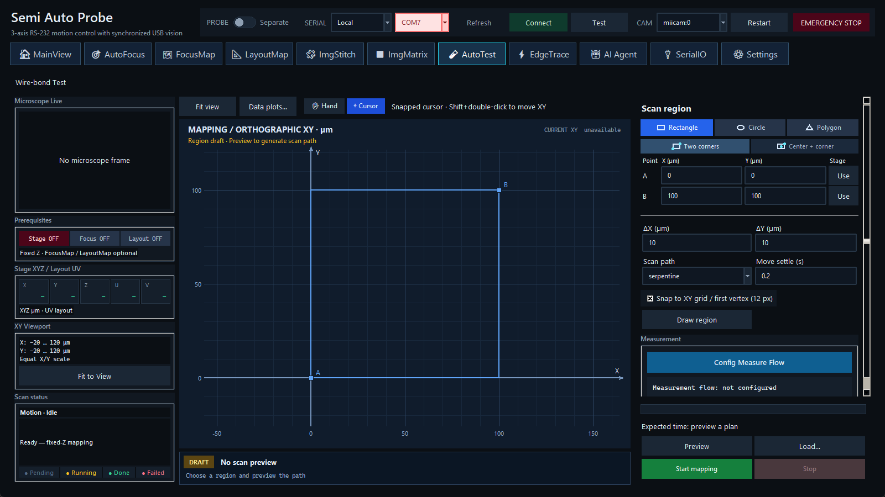

在固定 Z 的区域网格中运行共享测量工作流，并生成空间热图与可追溯点数据。

由授权人员在 Settings 的 Admin 区启用 Enable Wire-bond Test in AutoTest，AutoTest 会切换为本页面。它与 Probe Test 互斥，但共享同一 Measurement Workflow。模式写入 probe_config.local.json，普通操作员可继续使用已启用的模式。
设置 ΔX、ΔY、serpentine/raster、settle 和 snap。每轴最多 500 点；范围不能整除步长时不会自动追加终点，pulse 取整产生重复坐标时会拒绝。Preview 只生成并显示路径；先检查边界、点数、扫描方向和首末点。需要时可 Load 既有计划。
Config Measure Flow 打开共享 Workflow v2。Mapping 适合 Capture Photo、2450 Fixed-bias Current、DP100/光响应、公式和 Mapping Heatmap 等每点工作流。设置 hold during mapping 时，仪器偏置可跨点保持，但扫描退出、Stop 或错误时必须有输出关闭清理。
输出位于一个 AutoTest 时间戳 session 中：mapping.json、samples.csv、mapping.csv、mapping.png，以及可选 mapping_artifacts.sqlite3。成功点的节点文件可压入 SQLite 后删除临时 points/ 树；失败或中断会保留 loose artifacts 便于诊断。
Mapping data plots 可选择工作流产生的数值特征作为空间热图。Load 时以 JSON、CSV/SQLite 中的 completed 数据为准，不能仅从 PNG 判断任务完整。